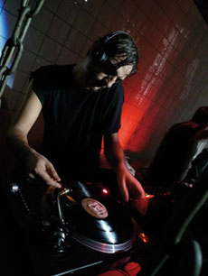

|
VILLALOBOS
Romuald Karmakar | D 2009 | 110 Min.
Material: HDV
Format: DigiBeta
Originalsprache: Deutsch
Kamera: Benedict Neuenfels, Romuald Karmakar, Katja Sambeth
Schnitt: Robert Thomann, Karin Nowarra
Ton: Marco Krüger, Frank Hellwig, Katrin Berk
Musik: Ricardo Villalobos
Mit Ricardo Villalobos
Produktion: Pantera Film
Vertrieb: Pantera Film
www.romuald-karmakar.de
Der Trailer auf Youtube
Wie denkt und hört Ricardo Villalobos, einer der wichtigsten DJs der elektronischen Musik? Wie kommen Herbert von Karajan und die Hörner von Mussorgsky in das Studio des chilenischen Musikers aus Darmstadt? Was passiert mit seinen Modulen und Maschinen, wenn sie längst abgeschaltet sind? Wie reagieren die Menschen auf seine Auflegekunst im Berliner Berghain, dem Technotempel der Gegenwart? Was wollen die Menschen auf den internationalen Bühnen von Ibiza für ihr Geld? Haben wir eigentlich mehr Sex als unsere Eltern? Und wie gehen wir um mit der Macht unseres Glücks? Nach seinen Filmen 196 BPM und BETWEEN THE DEVIL AND THE DEEP BLUE SEA ist VILLALOBOS der letzte Teil einer freien Trilogie, die sich mit Aspekten der elektronischen Musik und der Club-Kultur in der ersten Dekade unseres neuen Jahrhunderts beschäftigt.
2004 habe ich Ricardo Villalobos zum ersten Mal live als DJ erlebt. Er spielte unfassbar lange Stücke, die nicht nur tausende Menschen im Club, sondern auch ihn in eine andere Zeitzone katapultierten. Was wir hörten, lebte er mit einer Leidenschaft, die wie ein nicht müde werdender Aufruf wirkte, sich mit allen Mitteln gegen die Reduktion unseres Lebens auf die Struktur und die Zeiteinheit von Pop-Songs zu wehren. Aus einer Sekunde eine völlig andere Geschichte zu machen, das ist seine Kunst, der ich nachgehen wollte. – Romuald Karmakar
Romuald Karmakar, französisch-iranischer Herkunft, geb. 1965 in Wiesbaden. Dreht 1985 als Autodidakt seinen ersten Dokumentarfilm, die Super-8-Produktion Eine Freundschaft in Deutschland. 1994 gründet er die Produktionsfirma Pantera Film. Karmakar ist Mitglied der Berliner Akademie der Künste.
Filme (Auswahl): 2009 Villalobos | 2006 Hamburger Lektionen | 2005 Between the Devil and the Deep Blue Sea | 2003 Die Nacht singt ihre Lieder | 2002 196 bpm | 2000 Das Himmler-Projekt | 1995 Der Totmacher | 1992 Warheads
zurück
|